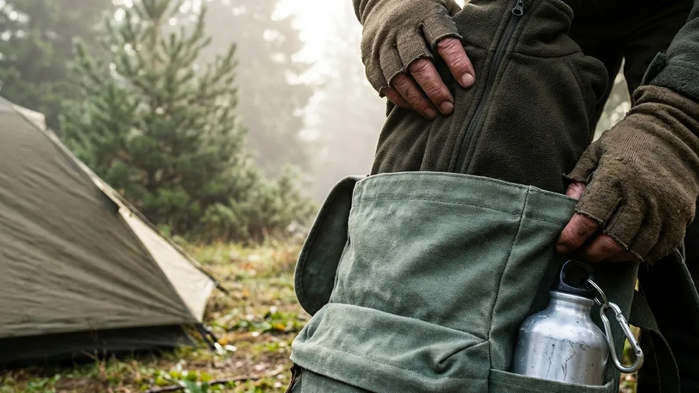

1. Keberhasilan Berkemah Berawal dari Kesiapan Logistik
Melangkah keluar dari zona nyaman peradaban kota dan merencanakan liburan ke alam pegunungan selalu terdengar seperti ide yang menakjubkan. Terbayang dalam benak betapa syahdunya menyeruput secangkir kopi panas di depan api unggun sembari menatap lautan bintang di langit malam. Namun, para petualang kawakan sangat memahaminya: di alam bebas, keindahan yang brutal selalu berjalan beriringan dengan cuaca yang tidak tertebak. Hujan badai, angin kencang, dan suhu beku pegunungan bisa mengubah fantasi indah Anda menjadi tragedi fisik dalam hitungan jam jika Anda berangkat dengan ransel yang salah.
Itulah sebabnya, membedah secara teliti Panduan Dasar Mempersiapkan Alat Buat Camping untuk Petualangan di Alam Terbuka bukanlah sekadar saran, melainkan sebuah prosedur penyelamatan nyawa (survival protocol) yang tidak boleh Anda abaikan. Kesalahan terbesar dari mayoritas pemula adalah mereka memfokuskan bawaan pada peralatan yang murni hanya untuk estetika foto, namun melupakan barang-barang vital yang berfungsi menahan laju hipotermia. Melalui artikel panduan super lengkap ini, kita akan membongkar seluruh sistem peralatan (gear system) yang mutlak harus Anda bawa. Mulai dari anatomi tenda yang anti-badai, susunan pakaian penghalau angin, hingga opsi paling praktis bagi Anda yang malas menguras kantong untuk membeli perlengkapan tersebut.
2. Persiapan Sistem Tempat Tinggal (Shelter System)
Di tengah hutan, tenda Anda adalah satu-satunya rumah (shelter) dan benteng pertahanan Anda dari alam liar. Memilihnya tak boleh asal murah.
Wajib Membawa Tenda Dome Double Layer
Bila Anda berkemah di dataran tinggi Indonesia (seperti di kawasan Batu Malang), Anda diharamkan membawa tenda murah bertipe satu lapis (*single layer*). Anda wajib memakai tenda dome bertipe Double Layer (dua lapis). Mengapa demikian? Tenda satu lapis tidak memiliki sistem pembuang hawa. Uap panas dari napas Anda saat tidur akan menabrak langit-langit tenda, mengembun (kondensasi), dan menetes bagai hujan gerimis ke wajah Anda. Tenda double layer memecahkan masalah ini dengan lapisan jaring dalam (inner) untuk bernapas, dan lapisan parasut luar (flysheet) untuk menahan badai hujan dan embun secara absolut.
Pasak Ekstra dan Tali Pancang (Guy Lines)
Banyak petualang pemula yang merasa tendanya sudah aman asalkan rangka tiangnya (frame) terpasang. Ini adalah jebakan maut! Tenda dome sangat ringan; angin pegunungan yang tiba-tiba berhembus kuat sanggup menggulung tenda tersebut. Anda wajib memaku ujung tenda dengan pasak besi. Selain itu, Anda harus menarik kuat tali pancang (guy lines) yang terhubung di bagian luar *flysheet*. Tali pancang ini berfungsi seperti urat nadi yang mendistribusikan beban hantaman angin, sehingga kerangka tenda tidak mudah patah saat terjadi badai malam.
BACA JUGA (Edukasi Tenda Dome):
3. Persiapan Perlengkapan Tidur (Sleep System)
Tubuh manusia memproduksi panas melalui pembakaran kalori. Jika Anda tidak memiliki sistem tidur yang tepat, tanah gunung akan menyedot habis kalori Anda.
Matras Isolator (Spons dan Aluminium Foil)
Tidur beralaskan tanah dengan punggung telanjang adalah jalan pintas menuju masuk angin berat (hipotermia). Hukum termodinamika menjelaskan bahwa panas akan selalu mengalir ke tempat yang lebih dingin. Anda harus memutus perpindahan panas tubuh Anda ke tanah dengan menggunakan Isolator. Susunan yang paling direkomendasikan pendaki kawakan adalah: gelarlah matras aluminium foil di lantai tenda paling dasar (sisi mengkilap menghadap atas untuk memantulkan panas tubuh Anda), kemudian tumpuklah bagian atasnya dengan matras spons konvensional untuk memberikan pijakan yang lumayan empuk pada tulang punggung.
Sleeping Bag Tipe Mummy Anti Dingin
Selimut kasur rumah sakit atau selimut bergambar kartun tidak memiliki rongga yang cukup untuk menahan angin gunung yang menyusup. Persenjatai diri Anda dengan Sleeping Bag (kantong tidur) khusus bertipe mummy (desainnya mengerucut dari bahu hingga ke telapak kaki dan memiliki penutup kepala). Bentuk yang ketat ini diciptakan khusus agar tidak ada ruang hampa berlebih (dead space) di dalam kantong, sehingga tubuh Anda tidak membuang kalori berharga hanya untuk menghangatkan angin yang kosong. Pastikan bahan lapisan dalamnya (inner) terbuat dari material polar fleece sintetik yang tebal.
4. Aturan Berpakaian Gunung (Layering System)
Pakaian di gunung adalah persenjataan keselamatan Anda (life support system), bukan sekadar gaya untuk *feed* Instagram Anda.
Aturan Emas: Dilarang Menggunakan Bahan Jeans
Jauhkan tangan Anda dari celana jeans (denim)! Bahan ini memiliki nilai insulasi nol persen dan tidak bisa menahan angin. Jika Anda memakai *jeans* dan ia terkena kabut atau embun malam yang basah, kain tersebut akan berubah menjadi teramat kaku, sangat berat, dan berfungsi bagai kompres es raksasa yang langsung menghantarkan hawa beku dari alam ke persendian tulang paha Anda.
Jaket Fleece dan Windbreaker Pelindung Angin
Lindungi diri Anda dengan teknik 3-Layering System. Layer pertama (base layer), gunakan kaus khusus olahraga (dry-fit) yang langsung menguapkan keringat dari kulit. Layer kedua (mid layer), kenakanlah sweater berbahan polar (fleece) rajut tebal sebagai pabrik penyimpan panas. Dan untuk layer terluar (outer layer), pakailah jaket parasut tebal berjenis Windbreaker atau Hardshell untuk menangkis tusukan angin lembah agar tidak melucuti panas di dada Anda. Wajib pula menggunakan pelindung ekstremitas: kupluk rajut (beanie), sarung tangan kain, dan dua lapis kaus kaki bersih saat tidur.

Memastikan bahwa jaket pelapis insulasi (fleece/polar) sudah terkemas dengan aman di dalam ransel (carrier) adalah prosedur krusial untuk menghadapi ganasnya penurunan suhu malam di alam pegunungan. (Ilustrasi: Unsplash)5. Peralatan Masak Lapangan (Camp Cooking)
Cuaca beku membuat tubuh Anda membakar kalori dengan sangat cepat. Ketiadaan makanan hangat sama halnya dengan mengundang penyakit.
Kompor Portabel, Windshield, dan Panci Nesting
Bawalah seperangkat dapur mini: kompor gas lipat portabel, tabung gas kaleng cadangan (hi-cook), serta Windshield (lempengan logam penahan angin). Di dataran tinggi, tanpa *windshield*, api kompor Anda tidak akan pernah sanggup mendidihkan air karena tersapu tiupan angin tiada henti. Untuk tempat masaknya, siapkan nesting (panci bersusun khusus gunung yang terbuat dari bahan hard-anodized aluminum yang ringan dan anti lengket).
Air Minum dan Bekal Makanan Padat Kalori
Bawalah stok air mineral yang amat melimpah untuk minum dan merebus logistik. Pilihlah bahan pangan yang proses memasaknya ringkas namun memiliki kepadatan kalori tinggi: sosis ayam, kornet sapi sachet, telur matang, oat, dan mi instan. Selain itu, Anda wajib membawa bubuk kopi hitam, teh, atau serbuk jahe merah. Meminum secangkir seduhan air panas di tengah hembusan angin subuh adalah trik medis paling efektif untuk mengembalikan suhu inti tubuh (core temperature) secara drastis.
6. Perlengkapan Penerangan, Navigasi, dan P3K
Hutan tidak menyediakan lampu sorot dan tidak ada klinik 24 jam. Kesiapsiagaan Anda adalah dokter pribadi Anda sendiri.
Headlamp (Senter Kepala) dan Peluit Survival
Melangkah keluar dari tenda untuk membetulkan pasak atau mencari jalur toilet di malam hari membutuhkan kedua tangan yang bebas (hands-free). Senter genggam apalagi lampu flash HP amatlah merepotkan. Bawalah Headlamp (senter yang diikatkan di kepala). Selain itu, kalungkan peluit survival pada ransel Anda. Meniup peluit saat Anda terpisah dari rombongan di tengah tebalnya kabut memakan energi yang jauh lebih irit dibanding berteriak, dan gema bunyinya membelah hutan berkali-kali lipat lebih jauh.
Kotak Obat Pribadi (First Aid Kit)
Susunlah sebuah dompet mini anti air (First Aid Kit) yang berisi obat fundamental: paracetamol (obat penurun demam), obat anti-diare/sakit perut (loperamide), obat anti mabuk perjalanan, cairan antiseptik (betadine), plester luka lentur, serta minyak kayu putih (balsam) untuk menghangatkan dada. Pastikan Anda juga mengemas trash bag (kantong sampah hitam) karena seluruh sampah plastik harus Anda bawa pulang kembali sesuai etika Leave No Trace.
BACA JUGA (Opsi Kemah Praktis):
7. Opsi Praktis Bagi Pemula: Menyewa Tenda All-In
Apabila rincian daftar peralatan keselamatan di atas—terutama tentang kewajiban membeli tenda *dome double layer* yang harganya mencapai jutaan rupiah—membuat nyali Anda ciut, jangan langsung membatalkan tiket liburan Anda. Perkembangan industri wisata luar ruang kini menawarkan solusi tengah yang teramat brilian: Comfort Camping.
Jika Anda mengunjungi destinasi terkemuka layaknya Batu Sunrise Camp di Kota Batu, Anda tidak dituntut untuk menjadi seorang pendaki gunung bersertifikat. Pihak pengelola telah mendedikasikan diri menyewakan lahan asri beserta paket peralatan All-In. Di sana, tenda *double layer* berspesifikasi badai telah didirikan (*di-pitching*) dengan rangka dan pasak yang kokoh. Di dalam tendanya pun telah dihamparkan matras tebal yang empuk serta kantong tidur (*sleeping bag*) wangi standar perhotelan. Anda cukup mengurusi urusan kecil seperti tas pakaian pribadi, logistik makanan untuk bersenang-senang, serta perlengkapan mandi darurat. Sisanya, alam dan pengelolalah yang akan memanjakan Anda dengan pengalaman otentik secara instan.
8. Kesimpulan
Pada akhirnya, petualangan di alam bebas tidak akan pernah menoleransi kemalasan Anda dalam melakukan persiapan (packing). Melalui pembedahan mendalam bertajuk Panduan Dasar Mempersiapkan Alat Buat Camping untuk Petualangan di Alam Terbuka ini, Anda seharusnya sudah tercerahkan bahwa ransel gunung bukanlah sekadar wadah, melainkan penyambung nyawa Anda sendiri. Kewajiban untuk memblokir hawa dingin menggunakan sleeping bag tipe mummy, membentengi tubuh lewat 3-Layering System, dan menolak keras pemakaian bahan *jeans*, adalah hukum mutlak keselamatan (*safety rule*) yang harus Anda patuhi tanpa perdebatan. Jika meramu dan membeli peralatan berat ini dirasa menguras energi maupun tabungan, manfaatkanlah solusi Comfort Camping di titik-titik penyewaan profesional sekelas Batu Sunrise Camp. Dengan perbekalan yang akurat di pundak, alam pegunungan Kota Batu yang sejuk tidak lagi menjadi ancaman, melainkan murni menjadi area bermain (playground) terbaik untuk memulihkan raga dan melepaskan beban stres dari kerasnya kehidupan kota.